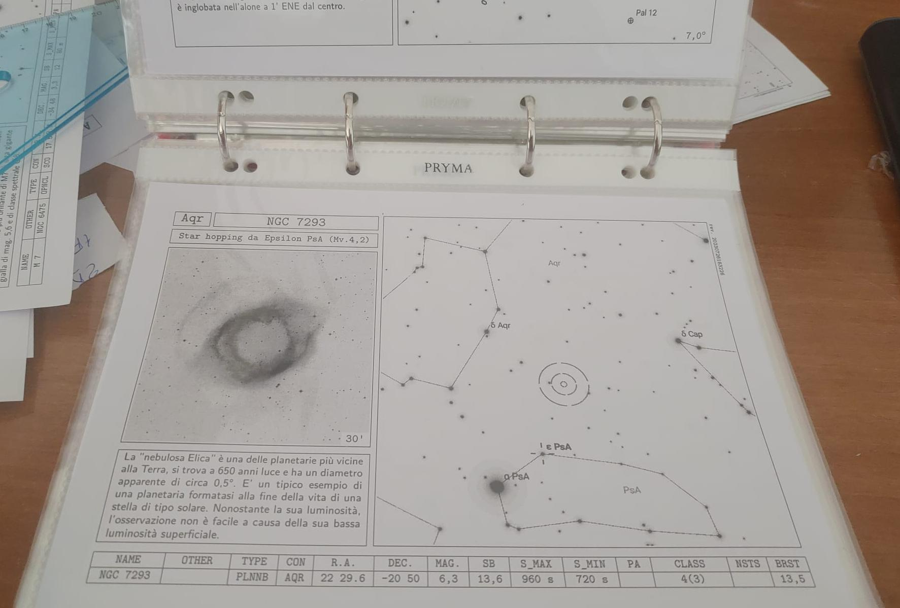
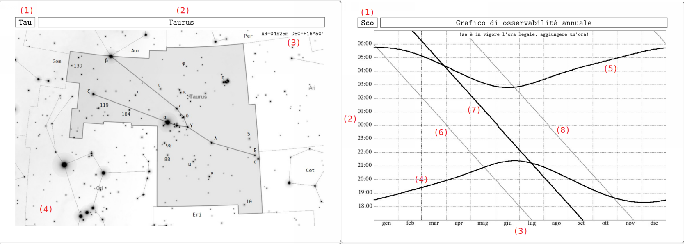
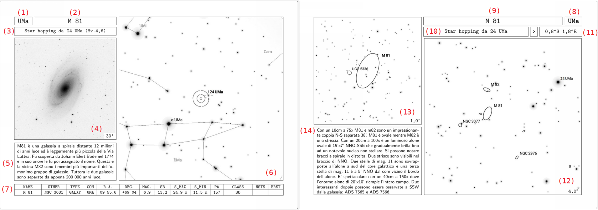
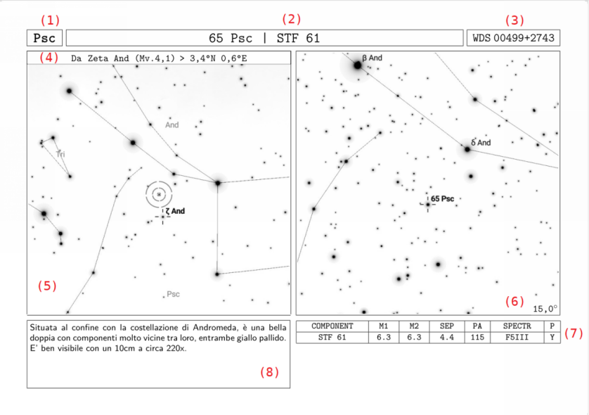
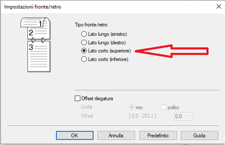

Home
Astro Cards
schede per l'osservazione degli oggetti più belli del cielo
Questo lavoro è una raccolta di schede osservative che ho sviluppato principalmente per osservare il cielo profondo, anche se in seguito ho voluto inserire anche alcune stelle doppie. Mi piaceva l’idea di realizzare una sorta di programma osservativo valido tutto l’anno per evitare di pianificare la serata poco prima. Pianificare in anticipo è praticamente d’obbligo quando ci si trova a dover decidere l’uscita all’ultimo momento, complice anche l’incertezza delle condizioni meteo.

Spinto da questa motivazione, ho iniziato a creare delle schede, una per ciascun oggetto, dove ci fosse praticamente tutto il necessario per individuarlo mediante lo star-hopping manuale e per osservarlo. Le schede sono state concepite per essere stampate e successivamente utilizzate con un classico raccoglitore ad anelli con buste in plastica perforate. Il maneggevole formato A5, unito alla possibilità di poter staccare dal raccoglitore la singola scheda per consultarla come unico riferimento direttamente al telescopio ne fanno uno strumento molto comodo da usare sul campo. Al fine di facilitare la lettura al buio, nella redazione delle schede, si è fatto uso esclusivamente del bianco e nero.
Il metodo utilizzato per creare le schede è molto standardizzato e il sistema “a schede tipo” ha il vantaggio di poter sempre ampliare il numero di oggetti catalogati semplicemente creando una nuova scheda e ordinandola nel raccoglitore una di seguito all’altra, per costellazione e per ascensione retta (in ordine di transito al meridiano). Attualmente ho realizzato le schede relative ad un buon numero gli oggetti, selezionati tra quelli più spettacolari.
Schede tipo "costellazione"
La scheda tipo della costellazione è costituita da due facciate (un intero foglio A5) e costituisce il frontespizio delle altre schede relative agli oggetti che saranno poste nelle pagine a seguire. La scheda, oltre a fornire una panoramica generale della costellazione, indica il periodo di osservazione più favorevole.

Nella prima facciata abbiamo una mappa a largo campo dell'intera costellazione e dei suoi confini. Nella seconda facciata è rappresentato un grafico di osservabilità con indicazione degli istanti di levata, tramonto e transito al meridiano del baricentro della costellazione. Vengono anche rappresentati gli istanti del crepuscolo astronomico (ore di buio). I valori sono calcolati per la località di Roma (ma rimangono validi con buona approssimazione per tutto il territorio nazionale).
Schede tipo "oggetti del cielo profondo"
Queste schede tipo sono state singolarmente concepite per avere immediatamente a portata di mano tutte le informazioni principali per puntare ed osservare una selezione dei più interessanti oggetti del cielo profondo fino ad una declinazione di -50°.

La singola scheda tipo è strutturata in due facciate, nella prima troviamo:
- Indicazione della sigla IAU della costellazione e della denominazione dell'oggetto. La scheda può fare riferimento a più oggetti se questi si trovano a brevissima distanza dall'oggetto principale.
- Indicazione della stella di riferimento scelta per lo star-hopping. Nei limiti del possibile si è cercato di utilizzare stelle vicine e più luminose della mag. 4,5. Quando il caso lo ha richiesto, si è scelto come riferimento un oggetto del cielo profondo, purché luminoso e molto vicino.
- Immagine DSS dell'oggetto con indicazione del campo inquadrato;
- Mappa a largo campo per l'utilizzo a occhio nudo con cerchi Telrad centrati sull'oggetto e indicazione della stella di riferimento per lo star-hopping;
- Riquadro con breve descrizione testuale dell'oggetto.
- Tabella con i dati tecnici dell'oggetto ricavati dal catalogo SAC 8.1
Nella seconda facciata vengono ripetute la sigla IAU della costellazione, la denominazione dell'oggetto e la stella di riferimento scelta per lo star-hopping con l'aggiunta di:
- distanza angolare AR/Dec dell'oggetto dalla stella di riferimento. Questo dato risulta particolarmente utile per l'esatta ubicazione dell'oggetto nonché per il puntamento manuale con montature equatoriali.
- Mappa per lo star-hopping al cercatore o al telescopio. La mappa riporta la frazione di cielo compresa tra l'oggetto e la stella di riferimento scelta. Il campo inquadrato è sempre indicato nell'angolo in basso a sinistra.
- Mappa di dettaglio per una esatta identificazione del campo attorno all'oggetto. Generalmente il campo inquadrato è di un grado ma può aumentare in caso di oggetti particolarmente estesi.
- Casella di testo con descrizione dell'oggetto osservato con strumenti di diversa apertura.
Schede tipo "stelle doppie"
Per queste schede tipo, vale quanto già detto per le schede del profondo cielo. Anche qui si hanno a portata di mano tutte le informazioni principali per puntare ed osservare alcune stelle doppie selezionate.

La singola scheda é strutturata in una sola facciata dove sono riportate:
- Indicazione della sigla IAU della costellazione e del nome della stella doppia, compresa la denominazione WDS della componente principale.
- Mappa a largo campo per l'utilizzo a occhio nudo con cerchi Telrad centrati sulla stella doppia. Quando il caso lo ha richiesto, è stata riportata la stella di riferimento scelta per lo star-hopping e la relativa distanza da quest'ultima.
- Mappa più dettagliata per lo star-hopping al cercatore o al telescopio. Il campo inquadrato è sempre indicato nell'angolo0ppp in basso a sinistra.
- Riquadro con breve descrizione testuale del sistema.
- Tabella con dati tecnici relativi alle componenti principali ricavati dall'ultimo aggiornamento del catalogo WDS.
Download
Questa raccolta nasce per una esigenza personale e mai avrei pensato di condividerla con altre persone. La creazione delle schede mi è costata parecchio tempo, dedicato sia alla progettazione delle “schede tipo” sia alla compilazione vera e propria delle stesse. Solo in seguito ho deciso di renderle disponibili gratuitamente a tutti. Spero che troverai questo lavoro particolarmente utile. Se preferisci, puoi contattarmi direttamente per condividere i tuoi pensieri o eventuali commenti.
Di seguito trovi link per scaricare le schede in formato PDF, suddivise per costellazione. Il formato altamente consigliato per l'utilizzo sul campo è quello A5. Ho scelto ugualmente di rendere disponibile il formato A4 perchè può risultare preferibile per la consultazione a casa.
| Costellazione |
Sigla |
Schede A5 |
Schede A4 |
| Coma Byrenices |
And |
And-A5.pdf |
And-A4.pdf |
| Antilia |
Ant |
Ant-A5 |
Ant-A4 |
| Aquarius |
Aqr |
Aqr-A5 |
Aqr-A4 |
Istruzioni per la stampa
Bisogna stampare l’intero file PDF su pagine A4, in bianco e nero, con orientamento verticale in modalità "fronte e retro". Assicurarsi che l'opzione di adattamento ai margini della stampante non sia attivata, selezionare invece l’opzione “dimensioni effettive” (scala 100%). Utilizzare l’opzione “rilegatura in alto sul lato corto” per stampare il retro di ogni pagina ruotato di 180°.

Principali riferimenti utilizzati
- Le schede PDF, sono state relizzate tramite LuaTeX nella distribuzione MiKTeX (https://miktex.org/)
- Le mappe del cielo sono state ricavate tramite SkySafari Pro 6 (https://www.skysafariastronomy.com/)
- I nomi e le sigle delle costellazioni sono quelli ufficiali ricavati dalla International Astronomical Union (https://www.iau.org/)
- Il baricentro e i confini di ogni costellazione sono state ricavate dai dati disponibili sul sito di Pierre Barbier (https://pbarbier.com/)
- Per il calcolo delle effemeridi (valide con piccoli scarti sul tutto il territorio nazionale) sono state utilizzate alcune utility ospitate sul sito di Pier Paolo Ricci (http://www.pierpaoloricci.it/)
- I grafici di osservabilità sono stati ottenuti tramite Gnuplot (http://www.gnuplot.info/)
- Le coordinate delle stelle di riferimento per lo star-hopping sono state ricavate da “The Mag 5 Star Catalog”, versione ridotta del “ Yale Bright Star Catalog” disponibile sul sito di John P. Pratt (https://www.johnpratt.com/)
- I dati tecnici tabellari inerenti gli oggetti deep sky sono ricavati dal catalogo SAC versione 8.1 pubblicato da “The Saguaro Astronomy Club” (https://www.saguaroastro.org/)
- I dati tecnici inerenti le stelle doppie sono ricavati ed adattati dal “Washington Double Star Catalog” nella versione attualmente utilizzata dal sito realizzato da Gianluca Sordiglioni (https://www.stelledoppie.it/)
- Le fotografie degli oggetti sono tratte dalla “Digitized Sky Survey” (https://stdatu.stsci.edu/cgi-bin/dss_form)
- Per la selezione degli oggetti finora schedati, si sono esclusi quelli ad una declinazione inferiore a -50° e si è fatto riferimento ad alcune liste: “Finest NGC Objects” compilata da Alan Dyer e pubblicata sul sito de “Royal Astronomical Society of Canada” (https://www.rasc.ca/); “Orion DeepMap 600” redatta da Steve Gottlieb e pubblicata nell’omonima mappa edita da “Orion Telescopes & Binoculars” (https://www.telescope.com/); "500 Best DSO list" redatta da Don Pensack e pubblicata sun noto forum statunitense Cloudy Nights (https://www.cloudynights.com/topic/472872-500-best-dso-list/?p=6165843).
- Le descrizioni generali degli oggetti provengono da diverse fonti (se necessario liberamente adattate e tradotte): “The Night Sky Observer's Guide” - di G. R. Kepple, G. Sanner, in 4 volumi editi da Willmann-Bell; “Observing Handbook and Catalogue of Deep-Sky Objects” - di Christian B. Luginbuhl, Brian A. Skiff, editi da Cambridge University Press; “Double Stars for Small Telescopes” – di Sissy Haas, edito da Sky Publishing; Vari libri e siti web in ordine sparso tra cui: (https://www.wikipedia.org/),( https://divulgazione.uai.it/), (https://www.webbdeepsky.com/double-stars/), (https://bestdoubles.wordpress.com/), (https://www.cloudynights.com/).